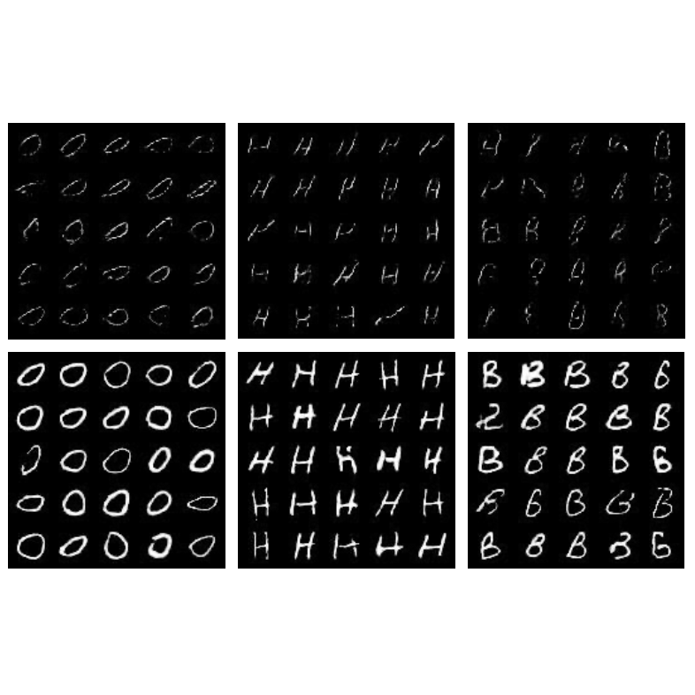
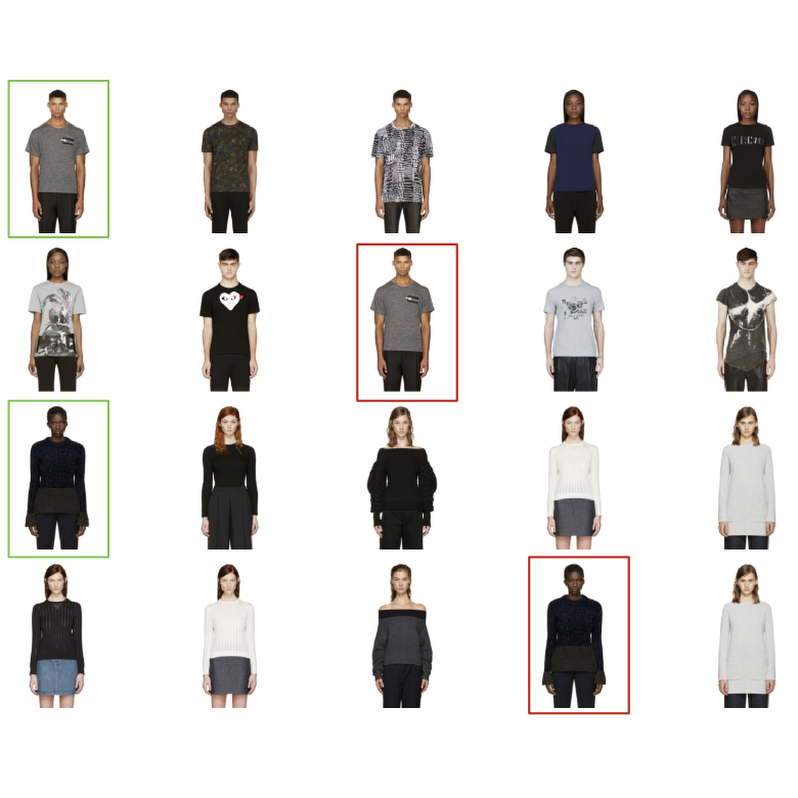
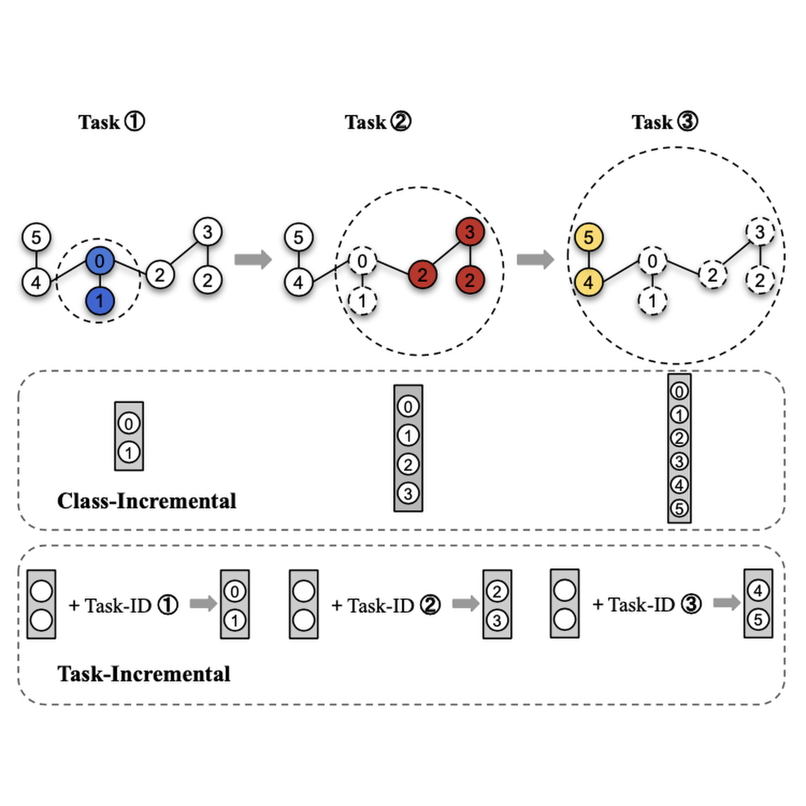
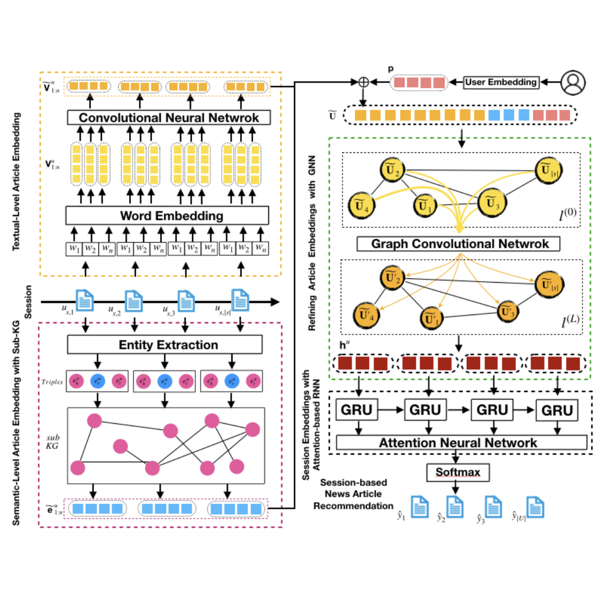
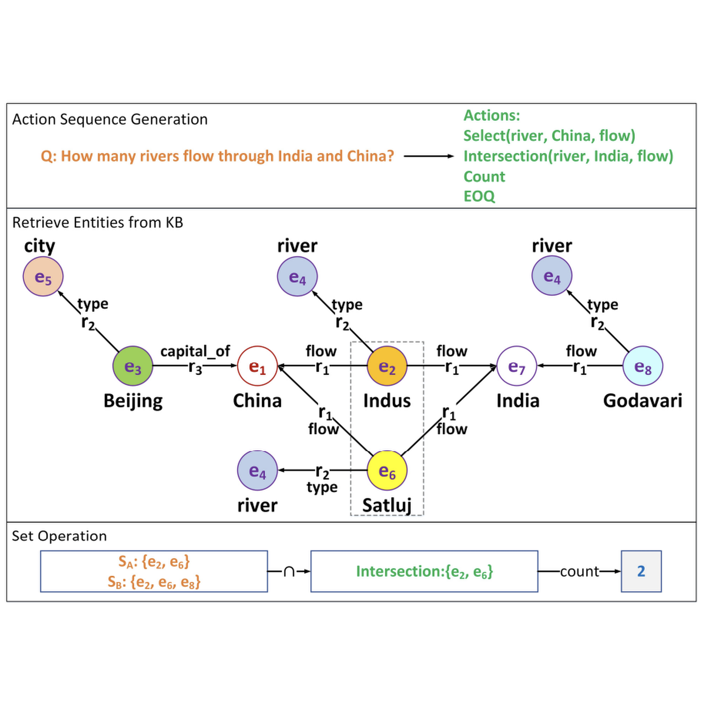
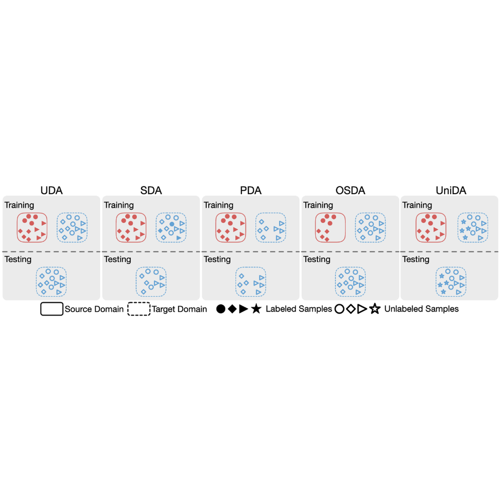

|
I am a second-year PhD student at the University of Virginia, advised by Dr. Sheng Li. Prior to that, I received my bachelor's degree in Electronic Engineering from Southeast University. I also collaborate with Dr. Handong Zhao from Adobe Research. Email: daiqing.qi at virginia.edu |
{kind=link}
|
I am interested in computer vision, multimodal learning (vision-language models), and machine learning (continual learning, federated learning). |
|
|
|
|  |
Daiqing Qi, Handong Zhao, Sheng Li International Conference on Learning Representations (ICLR) 2023 code / arXiv Learn to perform stable generative replay on distributed data. |
|  |
Daiqing Qi, Handong Zhao, Sheng Li International Conference on Computer Vision (ICCV) 2023 (Under Review) Enable the pre-trained CLIP to explicitly capture visual details for fine-grained corss-modal retrieval. |
|  |
Daiqing Qi, Handong Zhao, Sheng Li International Conference on Machine Learning (ICML) 2023 (Under Review) Continual learning with graph data. |
|  |
Hengshiou Sheu, Zhixuan Chu, Daiqing Qi, Sheng Li IEEE Transactions on Neural Networks and Learning Systems (TNNLS) code / paper |
|  |
Yuncheng Hua, Yuanfang Li, Guilin Qi, Wei Wu, Jingyao Zhang, Daiqing Qi Journal of Web Semantics (JWS) code / arXiv |
|  |
Ronghang Zhu, Dongliang Guo, Daiqing Qi, Zhixuan Chu, Xiang Yu, Sheng Li |
|
Program Committee Member: AAAI-23 AI for Web Advertising Workshop |
|
CS 5012: Foundations of Computer Science (Fall 2022) |
|
I love photography. I post some of my works on my Instagram, Gallery and my Blog (no longer updated).
I play the Auto Battler game (a subgenre of strategy video games) and was among top 150 (ranked |

More photos are available here. |